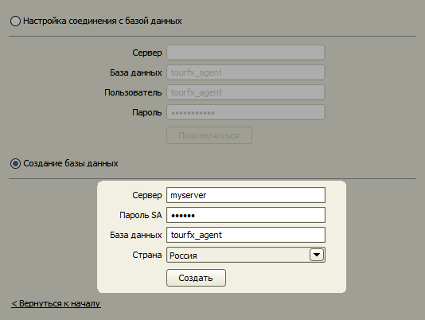

Установка многопользовательской версии
Перед установкой программы проверьте, удовлетворяет ли ваш компьютер системным требованиям программы.
Если вы уже работали с однопользовательской версией программой и хотите сохранить все данные при переходе на многопользовательскую версию, воспользуйтесь инструкцией по переходу с однопользовательской версии на многопользовательскую.
- Установите Microsoft SQL Server на одном компьютере (самом мощном в офисе).
- Установите программу TourFX.
- Создайте базу данных.
- Установите программу TourFX и настройте соединение с сервером на остальных компьютерах.
Установка Microsoft SQL Server
Установка и настройка Microsoft SQL Server производится по инструкции.
Установка программы TourFX: Агент
Создание базы данных
На экране "Первый запуск" выберите многопользовательскую версию.
Нажмите переключатель "Создание базы данных". Активируются поля "Сервер" и "Пароль SA".
В поле "Сервер" введите имя (или IP-адрес) компьютера, на который установлен SQL-сервер. Имя компьютера можно узнать в "Свойствах системы".
В поле "Пароль SA" введите пароль, указанный при установке SQL-сервера. Нажмите кнопку "Создать".

Дождитесь, пока программа создаст все необходимые базы данных на сервере.
По завершении установки программа запустится под пользователем "Администратор".
Вы можете добавить любое количество пользователей в справочнике "Пользователи".
На компьютерах пользователей необходимо установить программу и настроить соединение с базой данных.
Настройка соединения с базой данных
При установке программы на компьютер пользователя для многопользовательской версии
необходимо настроить параметры соединения с базой данных.
Выберите на форме "Первого запуска" режим работы "Многопользовательская версия".
На следующем экране в поле "Сервер" введите имя компьютера, на котором установлен
SQL-сервер. Нажмите кнопку "Подключиться".
Откроется окно "Входа в систему".
В случае возникновения проблем с подключением попробуйте выполнить следующие действия:
- Отключите брандмауэр Windows на компьютере, где установлен Microsoft SQL Server. Брандмауэр может блокировать входящие соединения. Обратите внимание, что даже если вы вручную выключили брандмауэр, некоторые программы могут его самостоятельно без вашего участия включить, и программа "TourFX: Агент" опять не сможет подключиться к базе данных. Если отключение решает проблему, можно добавить правило, разрешающее входящие соединения на порт 1433 (порт Microsoft SQL Server), и включить обратно брандмауэр.
- Временно отключите антивируc.
- Удалите Microsoft SQL Server, а затем установите и настройте его заново, очень внимательно следуя инструкции. Неправильное или неточное выполнение любого из шагов установки или настройки SQL-сервера приводят к проблеме с подключением программы к базе данных.
Остались вопросы? Напишите нам на e-mail